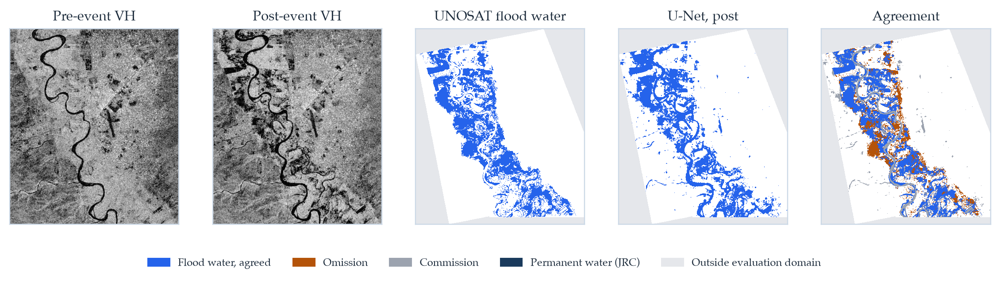
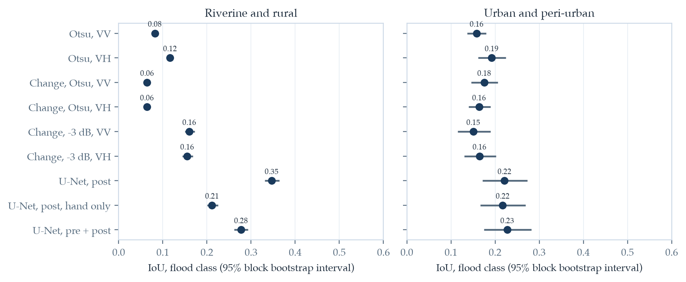
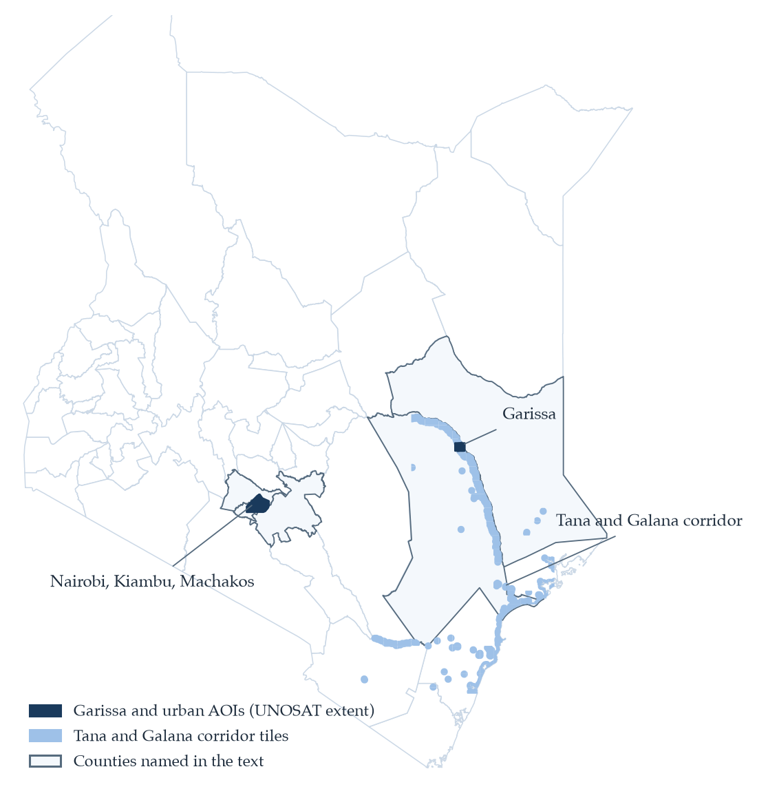
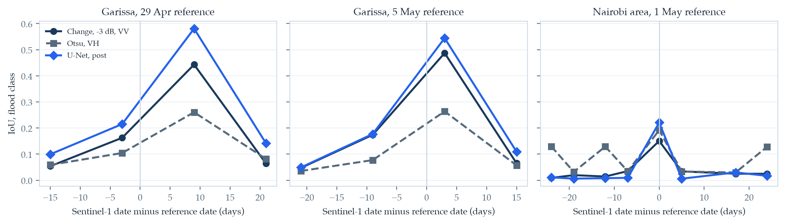
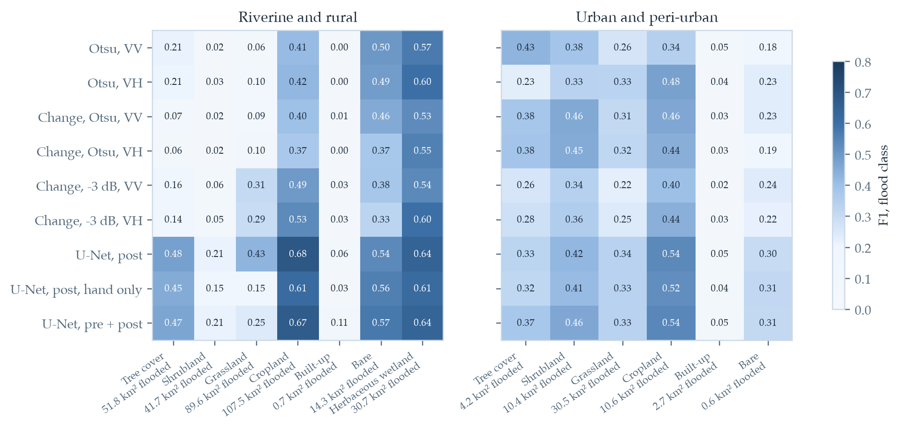
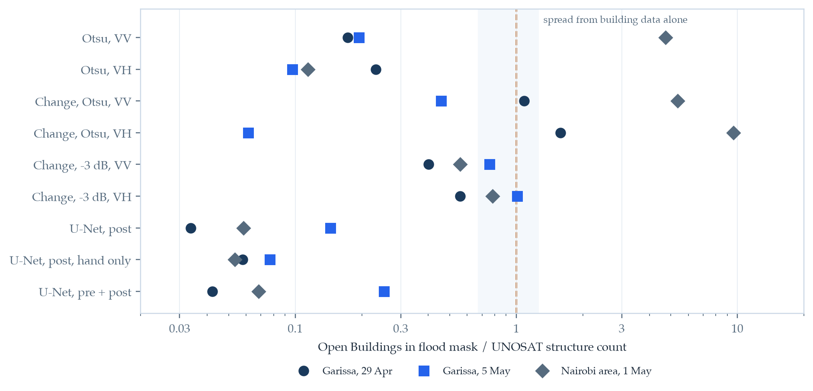
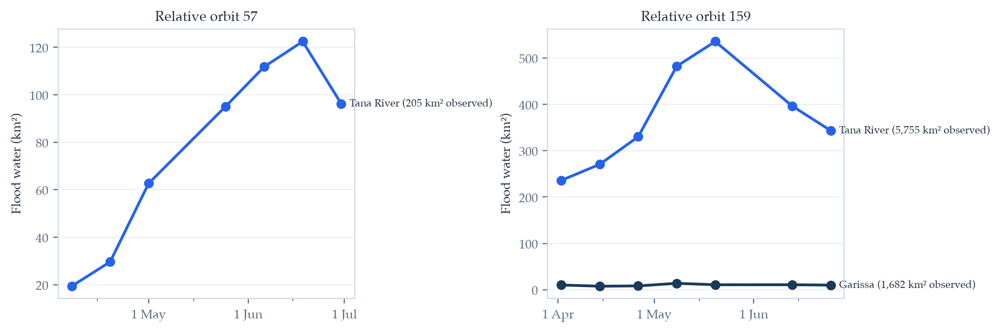

DECISIONS.md. This is independent research and
is not produced, reviewed, commissioned, or endorsed by UNOSAT, UNITAR,
ESA, the Copernicus programme, NDMA, the Kenya Space Agency, or the Kenya
Red Cross.
Key finding: A U-Net trained only on Sen1Floods11, which contains no Kenyan data, agrees with UNOSAT's flood maps along the Tana about twice as well as the best threshold or change-detection rule (IoU 0.347 against 0.160), and its flooded area matches UNOSAT's to within about 1% on two references. The same model finds only 3 to 14% of the buildings UNOSAT counted as affected, because its masks stay out of settlements, while a simple change-detection rule comes within the range expected from building data alone. In Nairobi, methods that keep their false alarms in check find about a quarter of the mapped flooding.
Kenya's March to May 2024 long rains brought flooding along the Tana River and across Nairobi and its neighbouring counties, and UNOSAT mapped it from optical satellite imagery, which cloud blocks during the rains. This paper measures how well Sentinel-1 radar flood mapping methods developed elsewhere transfer to these Kenyan landscapes, using UNOSAT's maps as an independent reference. Nine methods were compared, from Otsu thresholds and change detection to U-Nets trained on Sen1Floods11, with no Kenyan data used in training. In riverine settings, at Garissa and along 8,785 km² of the Tana and Galana rivers, the main U-Net agreed with UNOSAT at an IoU of 0.347 (95% interval 0.331 to 0.364), against 0.160 for the best classical method, and its flooded area was within about 1% of UNOSAT's on two references. In the urban analysis of Nairobi, Kiambu and Machakos every method's interval overlapped, and built-up land was where all nine failed. Timing mattered as much as method: at Garissa the U-Net scored 0.215 against a reference three days after the radar pass and 0.581 against one nine days before it, because the river was still rising. The best extent model placed only 3 to 14% of UNOSAT's affected buildings inside its masks, so extent and exposure call for different products. Applied to every pass from April to June, the U-Net shows flood water on the middle Tana peaking at 535 km² on 20 May and near the delta about four weeks later.
| Method | Riverine IoU | Urban IoU | Buildings found, Garissa 5 May |
|---|---|---|---|
| Otsu threshold, VH | 0.116 | 0.192 | 0.10× |
| Change detection, −3 dB, VV | 0.160 | 0.151 | 0.76× |
| Change detection, −3 dB, VH | 0.155 | 0.165 | 1.01× |
| U-Net, Sen1Floods11 hand + weak labels | 0.347 | 0.221 | 0.14× |
| U-Net, pre- and post-event, hand labels | 0.277 | 0.228 | 0.25× |
IoU for the flood class, pooled within each group. Riverine: Garissa on two reference dates and 70 tiles along the Tana and Galana rivers; urban: the Nairobi, Kiambu and Machakos analysis of 1 May 2024. In the urban column every method's 95% interval overlaps the others'. Buildings found is the number of Open Buildings centroids in the flood mask divided by UNOSAT's structure count; with UNOSAT's own flood extent the ratio is 1.26, so building data alone shift it by about 30%.







| Source | Role | Resolution |
|---|---|---|
| UNOSAT FL20240426KEN, via HDX | Reference flood water | Pléiades, Sentinel-2 |
| Sentinel-1 GRD, Planetary Computer | SAR input, VV and VH | 10 m |
| Sen1Floods11 v1.1 | Training data | 10 m chips |
| JRC Global Surface Water | Permanent water | 30 m |
| ESA WorldCover 2021 | Land cover | 10 m |
| Copernicus DEM GLO-30, GLO-30 HAND | Terrain correction, HAND | 30 m |
| Google Open Buildings v3 | Exposure | Building points |
Every input is public and needed no account. Flood rasters and tables produced here are released under CC BY 4.0; UNOSAT's data and their rasterised versions remain under CC BY-SA.
@misc{ouma2026kenyafloods,
title = {How Well Do Globally Trained {Sentinel-1} Flood Mapping
Methods Transfer to {Kenya}? An Evaluation Against
{UNOSAT} Rapid Mapping of the 2024 Long-Rains Floods},
author = {Ouma, Craig Carlos},
year = {2026},
month = {October},
note = {Preprint},
url = {https://craigouma.github.io/kenya-floods-sar-2024/}
}